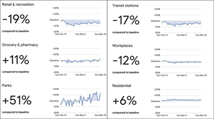

‘야외 시설 이용 50% 증가’, 구글이 알려주는 한국의 거리 두기 실태
4월 3일, 구글은 한국 인구의 동선 동향 등 131개국 동선 분석 보고서를 발표했다.
구글은 "코로나19 대응 과정에서 각국 공중보건당국이 익명화된 집합 위치 데이터가 있으면
중요한 결정을 내리는 데 도움이 될 것이라는 제안이 많았다"며
"이에 사회적 거리두기의 효능을 나타내는 숫자들을 제공하고자 한다"고 밝혔다.

위 그래프는 한국의 동선 분석결과로, 신종 코로나바이러스 감염증(코로나19) 확산을 막기 위한
사회적 거리두기 운동이 확대되며 직장이나 교통시설, 식당 등에 방문하는 비율이 줄어든 반면
공원과 같은 야외 시설 이용은 기존 대비 50% 늘어난 것으로 나타났다.
이번 조사는 전 세계 131개국에 있는 구글 안드로이드 이용자들을 대상으로 시행됐다.
통계는 △소매 및 오락시설 △식료품점 및 약국 △공원 △교통 환승지 △근무지 △주거지 등
6개 카테고리로 나눠 분석된 데이터를 바탕으로 집계됐다.
사회적 거리두기가 본격화되기 전인 지난 1월 3일~2월 6일 사이 인구 이동 평균치 대비
3월말(국가별로 27일 또는 28일부터 29일) 인구 이동을 증감률로 비교했다.
국내의 경우 해당 기간 동안 식당이나 카페, 영화관, 쇼핑센터 등을 포함한 소매 및 오락시설 방문율은 기존 대비 19% 줄었다.
버스, 지하철 등의 교통 환승지는 17%, 직장 방문은 12% 줄었다.
반면 공원이나 해변과 같은 야외 시설에 대한 방문 횟수는 51% 늘어난 것으로 파악됐다.
식료품점이나 농수산물 직판장, 약국 등은 11%, 주거지는 6% 증가했다.
구글은 "익명화된 집합 데이터를 활용했다"며 "개개인의 특정 시설 방문 경로를 나타내지 않으며
각 카테고리로 분류된 집합적 데이터를 보여주는 것"이라고 했다.
예컨데 이용자가 서울 양재에 있는 이마트 또는 코스트코를 방문하면 해당 지점이 아닌 ‘식료품점’으로 분류 돼 집계되는 것이다.
구글 앱을 쓸때 사용자의 위치를 허용할 경우 자동으로 파악되는 기능 등을 활용했다.
구글은 또 "모든 위치 기록은 익명화해서 가공 처리 됐고,
위치기록 사용에 동의한 사용자의 타임라인에 보여진 과거 위치기록 데이터만을 활용했다"고 했다.
구글은 "이 보고서에 담긴 정보가 완벽한 것은 아니며
공중보건당국이 확보한 다른 정보와 결합해서 사용하면 중요한 결정을 내리는 데 도움을 줄 것으로 보인다"고 했다.
우리 정부는 4월 4일 날 신종 코로나바이러스 감염증(코로나19) 차단을 위한 ‘사회적 거리두기’ 캠페인을 2주 연장하기로 했다.
이에 따라 당초 4월 5일까지였던 캠페인은 19일까지 계속된다.
HOVID-19 유다나 기자 (Holston31009@covid.19)